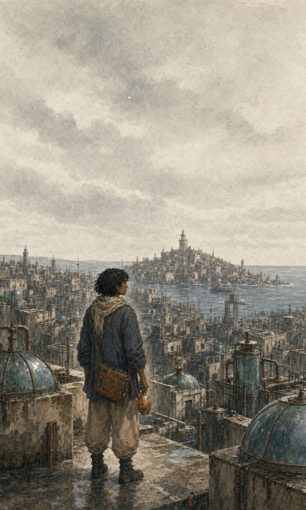

Un récit explorable en trois chapitres
La Part des pluies
À Bellwether, l’eau douce se gagne en confiant ses souvenirs. Quand ceux de sa grand-mère cessent de s’accorder, Nima doit choisir ce qu’une ville a le droit de tenir pour vrai.
Archives situées
Codex
Notes d’Ilyan Rove, copiste auxiliaire suspendu.